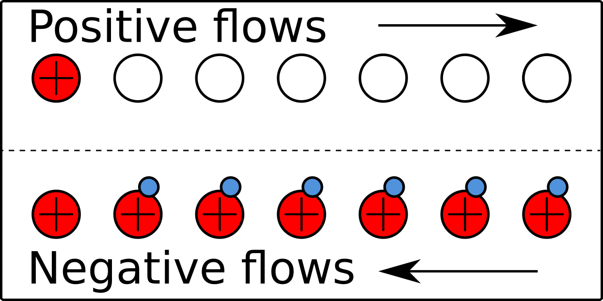
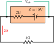

University Physics II

PHYS 232N: October 5, 2021
Conventional Current

|
 |
PQ-10 Question 1
What is the equivalent resistance of the circuit shown below? $R_1=6Ω$, $R_2=9Ω$, $R_3=8Ω$, $R_4=4Ω$, $R_5=3Ω$.
PQ-10 Question 2
A battery is rated to have an EMF of $\mathcal{E}=12V$. However, the battery is old and outputs a smaller terminal voltage, ($V_{ab}$). We can model this imperfection as an additional resistor, $r=2Ω$, in the battery. When connected to a resistor $R=4Ω$ a current of 2A flows.
|
(a) What is power output of the battery?
(b) What is the battery's terminal voltage? (c) How much power is dissipated by the battery’s internal resistance? (d) What is the power consumption of R? |
 |